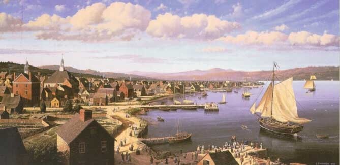

|
(Click on any feature)  The Return of the Experiment, by L. F. Tantillo, 1994. Collection of Key Bank. Captained by Albany resident Stewart Dean, the Experiment sailed from Albany to China in 1785 - the second American ship to visit the Orient. This painting commemorates its return to Albany during the summer of 1787. This 48 x 96 panorama can be seen by the public in the lobby of the Key Bank building (the bank's northeast regional headquarters) at 66 South Pearl Street just outside the walls of the original city stockade. The following narrative was composed by the artist and appearing in the published catalog of an exhibition of his historical works held at the University Art Museum in 1996: It is impossible for an artist to accurately portray without existing visual material something as complex as a city of another era. In such cases I always build scale models. I began this one by basing my layout on a 1770 map of Albany which clearly indicated the location and arrangement of major structures. Utilizing my earlier research I first built models of the well-known buildings which included the Dutch Church and City Hall. They were followed by dozens of houses, barns and outbuildings. I also modeled Experiment and other river craft. Once I had a way to study the old city I started making sketches. After much consideration and many color studies I decided to place the viewer south of City Hall at about rooftop height looking north up the Hudson River. This position placed Experiment in the lower right foreground of the painting moving away from the viewer toward City Hall Dock. The likelihood that Dean’s return to Albany looked anything like my painting is small. For all we know he could have arrived in the middle of the night or during a storm or even at a different time of year. I do believe, however, that the Albany I painted is close to what existed at that time and that if Captain Dean sailed up to City Hall Dock on a sunny late afternoon in June of 1787 this is what we would have seen from our rooftop perch. After working on this commissioned painting for one year it was finally completed and installed in the lobby of the KeyCorp Building on South Pearl Street in Albany. For more on The Experiment and its "exploits," see the sources cited following our sketch of Captain Dean.
first posted 11/20/02; last updated 10/2/15 |